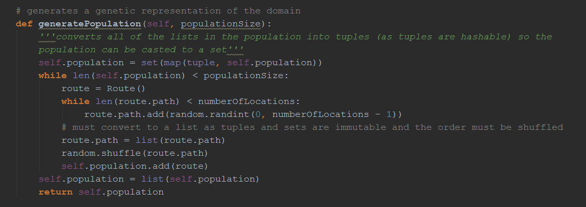
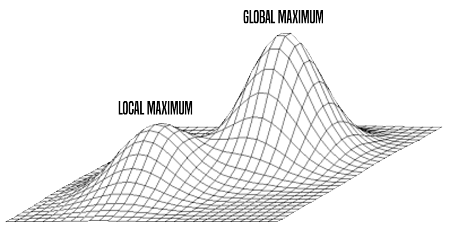
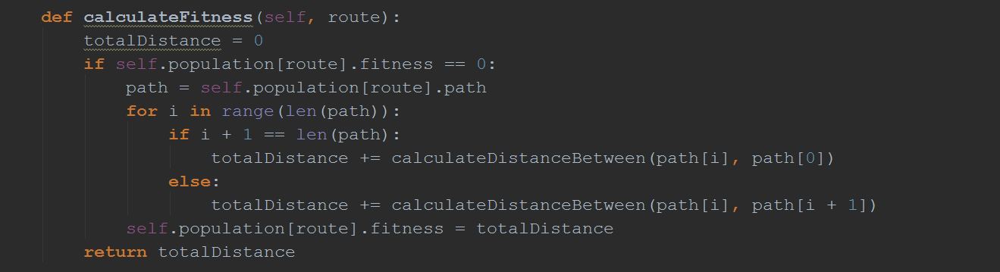

JM

Genetic Algorithm
JM
I was first introduced to genetic algorithms when reading, The Master Algorithm, by Pedro Domingos - a professor at the University of Washington. The idea interested me and so I looked into it further discovering an article online demonstrating how to use a genetic algorithm to crack a password. After reading this I decided I wanted to build my own genetic algorithm. The travelling salesman problem seemed to be popular with genetic algorithms so I decided that I would try and build my own version and hopefully in the process I’d maybe come up with a different way to do something. There are a few main steps involved in a genetic algorithm, creating a population, creating a fitness function, mutating the genes and implementing survival of the fittest for each generation.
The Generate Population Funtion.
The travelling salesman problem is an NP hard problem - there is no way to solve it in polynomial time and also no way to verify a solution in polynomial time. The travelling salesman problem deals with a number of cities and asks what is the shortest possible route that visits each of cities and returns to the starting city. In cases with a small number of cities this is a simple problem to solve, however, it becomes vastly more difficult as the number of cities increases. For example, there are 6 possible orders you can visit 3 cities in but there are 15,511,210,043,330,985,984,000,000 orders you can visit each of the 25 cities in. Finding the optimum solution for problems with a large number of cities is unfeasible and sometimes impossible with today’s computers. This why a genetic algorithm can be used to find a close to optimal solution - a solution that is good enough.
A genetic algorithm can work very well for finding a suitable solution, although, as is the problem with some other AI techniques can find itself stuck in a local maximum of fitness. The travelling salesman problem requires a very specific genetic algorithm where each city is visited exactly once and a certain technique when mutating genes. It is programmed to ensure that no solution has no repeating cities and includes every city.
The genetic algorithm starts off by generating a population of random routes between cities which are represented by coordinates. The fitness of each of these routes is then calculated and they are sorted - using quicksort - in terms of fitness. The fitness function in this case is determined by the total distance of the route. Survival of the fittest takes place and only a certain amount of the fitter solutions survive. These fitter solutions are then mutated - in this case I decided to experiment with a small mutation rate - this rate can be altered - due to what I read here.
The Fitness Function.
Instead of just mutating the fittest solutions the algorithm also allows unmutated copies of the fittest routes to survive to avoid killing off an optimal solution. I also decided to mutate the fittest genes multiple times to increase the chance of finding the optimal solution.
This process is carried out for a number of generations and then the fittest solution found is outputted. Currently the program takes in parameters to decide things such as number of generations to run for and how many routes survive each generation. This probably requires a lot of mathematical analysis to find best parameters for problems of different sizes - this is similar to the exploration-exploitation dilemma. I plan on improving the algorithm by allowing more parameters to be varied, for example the mutation rate. Another way I plan on improving the algorithm is by letting it run until a solution of a certain fitness is found instead of just a set number of generations.
The Evolve Function.
The code for this algorithm is available on GitHub. Click Here.
By Jude Molloy: Last Edited 08/09/2018